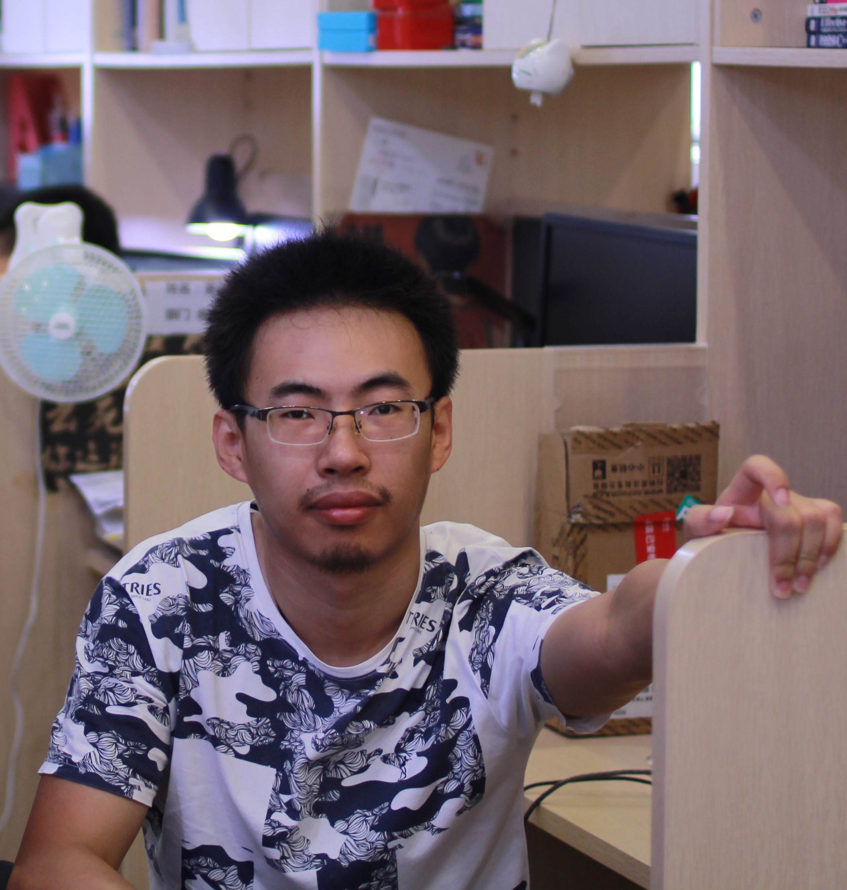

|  |
Yunhang Shen (沈云航)Media Analytics and Computing (MAC) lab, Xiamen University, China. Emails: shenyunhang01 AT gmail.com (best), yhshen AT stu.xmu.edu.cn [Goolge Scholar] I am currently a second year Ph.D student in Cognitive Science and Technology of Xiamen University. My advisor is Prof. Rongrong Ji. I received the B.S. and M.S. Degree in Cognitive Science and Technology of Xiamen University in 2014 and 2017, respectively |
My research interests are in Computer Vision, Multimedia and Machine Learning.
Recently, I focus on: